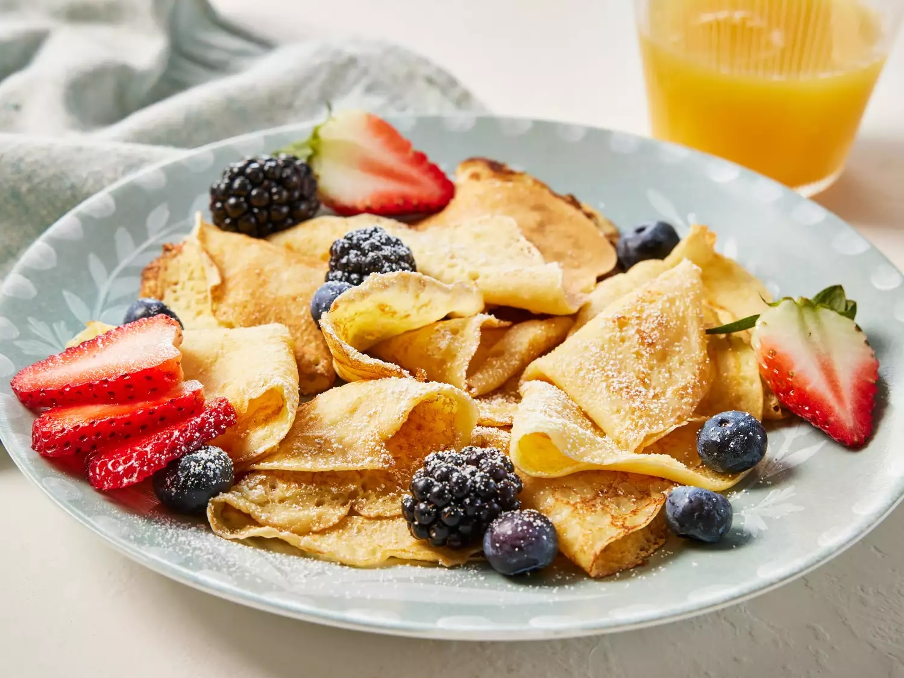

Authentic Swedish Pancakes

Description
This Swedish pancakes recipe was taught to my father by his mother, who was born in Sweden. My father then passed this authentic recipe to me. Kids love them, and there are never any leftovers when I make them. Spoon melted butter over the pancakes and sprinkle with sugar or serve with lingonberry sauce. The pancakes can be made into larger cakes; however, the yield will be smaller. You can also use the batter to make crepes.
Ingredients
- 3 eggs
- 1 ¼ cups milk
- ¾ cup all-purpose flour
- 1 tablespoon white sugar
- ½ teaspoon salt
- 1 tablespoon butter, or as needed
Steps
- Gather all ingredients.
- Beat eggs in a bowl with an electric mixer until thick and lemon-colored, 3 to 5 minutes.
- Stir in milk.
- Sift together flour, sugar, and salt in a separate bowl. Add to egg mixture; mix until batter is smooth.
- Grease a griddle with butter; heat over medium heat. Drop tablespoonfuls of batter on the griddle; spread to make thin pancakes.
- Cook until light brown on bottom, 1 to 2 minutes.
- Flip and continue cooking until second side is light brown, 1 to 2 minutes more. Repeat with remaining batter.